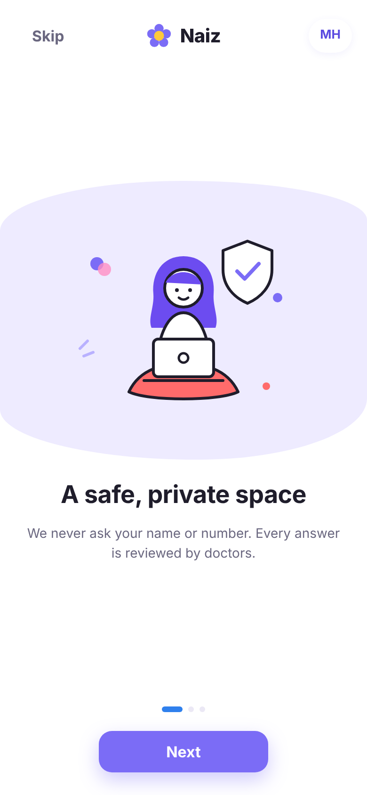
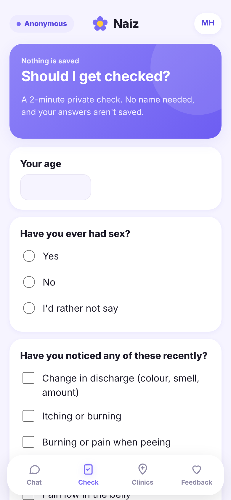

Private sexual health answers for young women in Mongolia
Naiz is an anonymous chat and 2-minute check that turns shame and silence into a test at a free clinic. Answers come only from a knowledge base written and approved by doctors, in Mongolian and English.


The services exist. Young women don't use them.
HPV vaccination, cervical screening and STI testing are free in Mongolia, yet uptake is low. Shame, fear of being seen and untrusted information keep young women away, so infections go unnoticed and cancer is found late.
STI infections recorded each year; about 45% of syphilis cases are aged 20–29
NCCD via UB PostWhat Naiz does
Built for our early adopters: women aged 18–24 in Ulaanbaatar and aimag centres who use their phone for everything and would never ask these questions out loud.
Anonymous chat
Ask anything in Mongolian (Cyrillic or Latin letters) or English, on the web or Facebook Messenger. No name, no phone number, no account.
"Should I get checked?"
A 2-minute private check, with rules set by doctors, that suggests which test makes sense and how soon. Not a diagnosis. Answers are never stored.
Free clinics first
The clinic finder always lists free public services first: family health centres, STI clinics and adolescent-friendly rooms.
Safety first
Messages about self-harm, sexual assault, violence or emergencies never reach the AI. They get a fixed, doctor-approved reply with emergency numbers.
How the AI works
A large language model understands the question in whatever language or spelling it comes in, then answers only from entries our doctors approved. It never diagnoses and never names medicines or doses.
Question
Mongolian Cyrillic, Latin-script Mongolian or English, from web or Messenger.
Safety check
Red-flag patterns run first. A match gets a fixed reply with emergency numbers.
Grounded AI answer
The model may only use approved knowledge-base entries and cites their ids for audit.
Next step
Every answer offers the private check and the free clinic list.
Anonymous data
Only counts are kept: topics, check levels, thumbs up/down. Never message text.
Doctor-approved content
39 Q&A entries, each with a source. Only entries marked approved are used when Naiz goes live.
Works without AI too
If the AI model is unavailable, keyword matching returns the closest approved entry, so the service never goes dark.
AI-assisted research
The team page groups tester comments into themes with AI; the team checks every theme against the real comments.
Evidence and iteration
We test, triage every finding (P0–P3, MoSCoW), fix, and test again. Only real results appear here; a line appears once the data exists.
What we changed, version by version
Next 12 months
From a tested prototype to a pilot that measures real tests booked and completed.
Months 1–3
- Doctors review and approve every knowledge-base entry
- Mongolian answers written and checked by the team
- Data protection review
- Verify partner clinics
Months 4–6
- Pilot with 2–3 clinics in Ulaanbaatar
- Messenger channel through Meta App Review
- Anonymous test reminders
Months 7–9
- Measure tests booked and completed via partner clinics
- Parents' HPV vaccine module
- Mongolian voice input
Months 10–12
- Expand to aimag centres
- Publish pilot results and the open knowledge base
- Apply for Digital Public Good status
Open source, open content
Code under the MIT licence. Knowledge base under CC BY 4.0, so any clinic or country can reuse it.